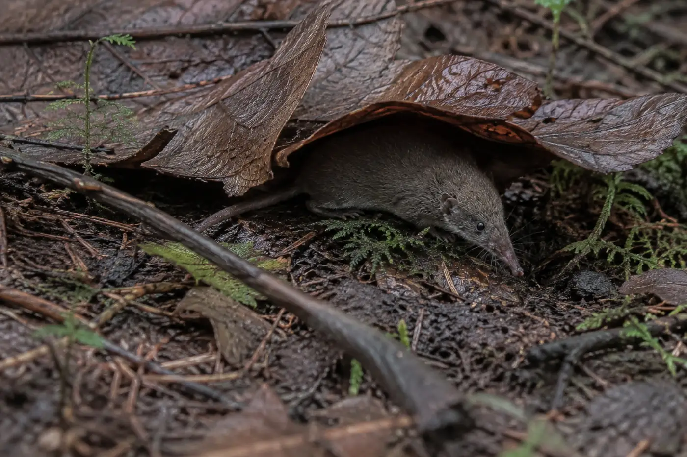
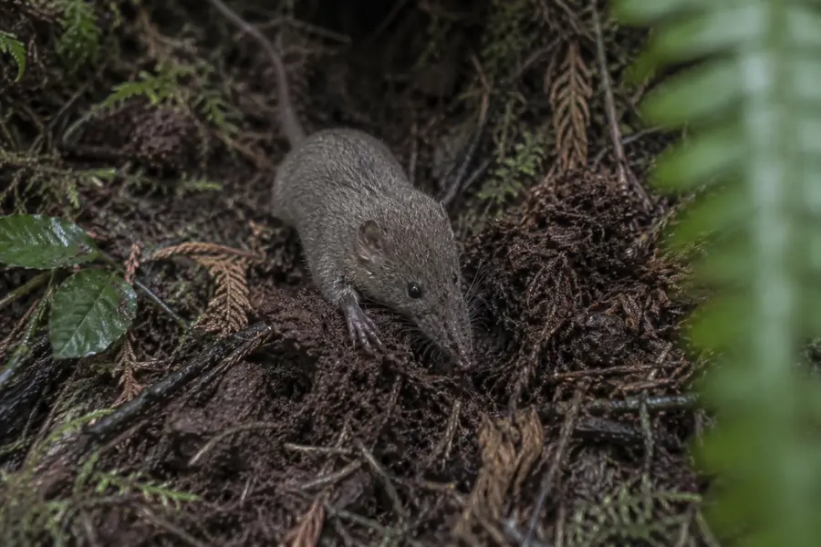
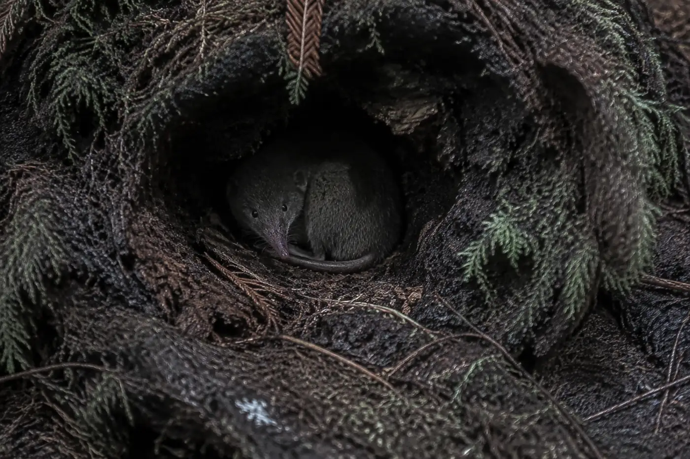
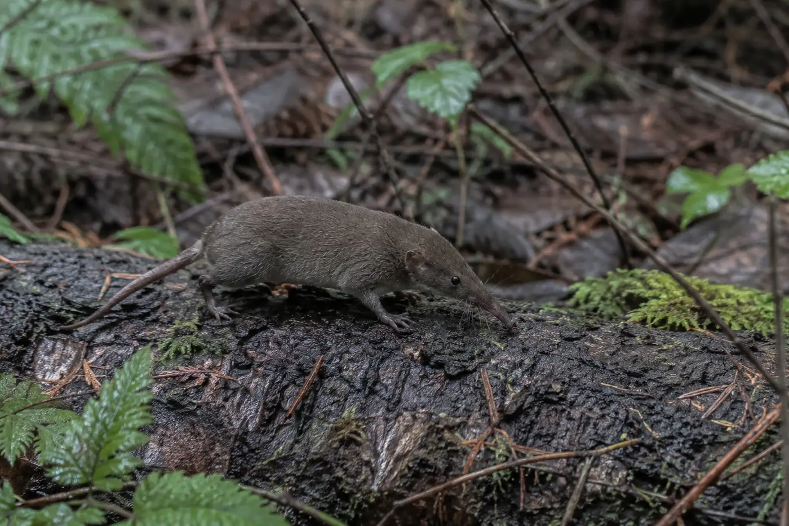

Clallam County, Washington
Sorex sonomae olympicus lives in a thin band of fog-fed riparian forest on the western Olympic Peninsula. It weighs less than a AA battery and dies within four hours of its last meal. For twenty-eight years our volunteers have been the only people counting it.
397
Mature individuals estimated remaining
That figure comes from our own transects. No agency has ever surveyed this subspecies, and no one else is going to.
Sorex sonomae olympicus
The Olympic fog shrew is the northernmost and smallest-bodied of the fog shrews, described as a distinct subspecies in 1994 on the basis of skull morphology and a shortened hind foot. It remains the only known Sorex sonomae population north of the Columbia River.
Adults measure 61–74 mm head-to-body with a tail of 44–59 mm and weigh between 6 and 11 grams. Like all shrews it carries an extraordinary metabolic rate and must feed almost continuously, taking close to its own body weight each day in earthworms, beetle larvae, centipedes and slugs. A shrew that goes four hours without food will die. That single fact governs everything else about its biology.


Why fog matters
Between June and September the western Peninsula receives very little rain. The moisture that keeps the litter layer damp condenses out of marine fog onto the canopy and drips to the forest floor. Beneath intact old-growth canopy this contributes the equivalent of 20–30 cm of additional precipitation in a typical year.
Where the canopy has been removed the fog passes overhead and the ground dries. The shrew's prey base collapses within a single season, and the shrew follows it. This is why the subspecies tracks canopy cover far more tightly than it tracks any other variable we measure.
Three pressures
Post-windthrow salvage logging is permitted inside stream buffers that would otherwise be protected. Removing downed wood removes exactly the structure the shrew shelters and forages in. Our transects at Hoko and Sekiu recorded a 74% drop in captures across the two seasons following salvage entry, with no recovery after six years.
Coastal fog days on the outer Peninsula have declined measurably over recent decades. For a subspecies whose entire summer moisture budget depends on fog drip, a shortened fog season is not an inconvenience. It is an extinction pressure.
Sorex trowbridgii, a generalist, colonizes drier disturbed stands quickly and appears to exclude the fog shrew from marginal habitat. Where the two co-occur in our trapping records, fog shrew captures fall below one per hundred trap-nights.

Straits Field Ecology Station · 1998–present
OFSRI maintains eleven permanent pitfall transects across four drainages, checked twice weekly from May through October by trained volunteers under the supervision of Dr. Marian Osterhout, who has led the program since its founding. All captures are measured, photographed and released. No specimens are retained.
| Transect | Trap-nights | Captures | Per 100 | Trend |
|---|---|---|---|---|
| Hoko Ridge | 2,840 | 19 | 0.67 | Declining |
| Sekiu Headwaters | 2,610 | 11 | 0.42 | Declining |
| Pysht Bottomland | 3,020 | 44 | 1.46 | Stable |
| Clallam Fork | 1,970 | 6 | 0.30 | Declining |
| Deep Creek | 2,455 | 0 | 0.00 | Extirpated |
Four actions
The public window closes September 4. Two paragraphs in your own words carry more weight than a form letter.
$40 covers one volunteer's season of trap materials for a single drift fence.
Fog shrews are occasionally recovered by house cats. If you live west of Joyce, we want to hear from you.
Almost no coverage of this subspecies exists outside our own publications. Visibility is the constraint.
Adopt a shrew
We hold no government contracts and take no corporate money. Field season runs May to October, and every dollar goes to trap materials, fuel, and volunteer training.
Capture summaries, comment deadlines, and volunteer calls. Roughly six emails a year.
The Olympic fog shrew does not exist. Here is every tell you could have caught, and the check that would have caught it.
The tree octopus is easy because it is absurd. This one is not absurd, and that is the point. Real misinformation is plausible, well made, internally coherent for the first thirty seconds, illustrated with genuine photographs of the wrong thing, and it wants something from you. You cannot catch it by how it feels. You catch it by leaving the page.
If a tool told you this was fake and you talked yourself out of it, notice that. Being talked out of a correct answer is its own failure mode, and the fix is the same. Go check, and let the check decide.